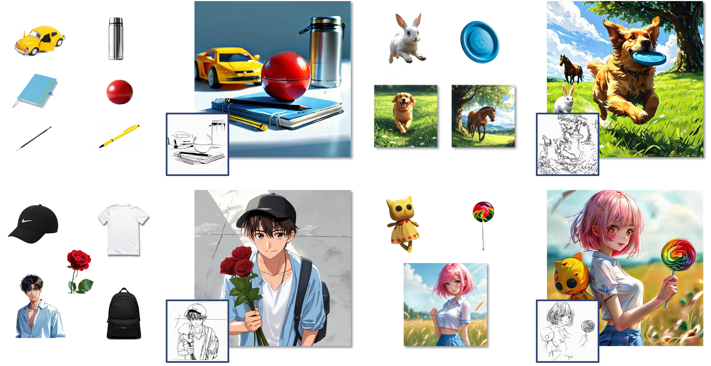
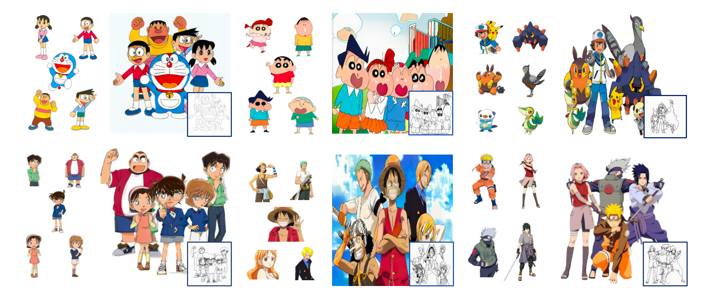
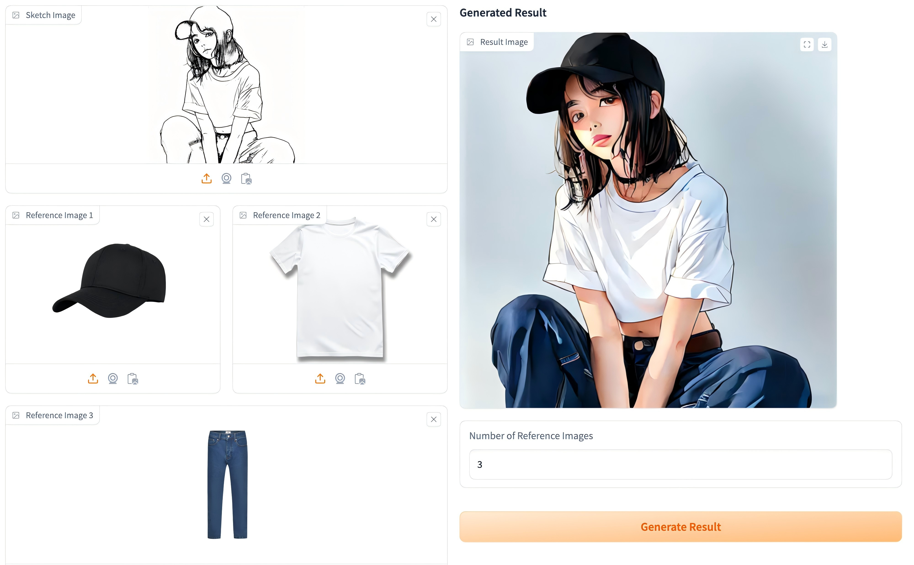
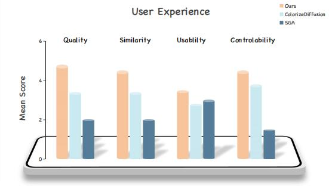

MagicColor: Multi-instance Sketch Colorization


We present MagicColor, a diffusion-based framework for multi-instance sketch colorization. The production of multi-instance 2D line art colorization adheres to an industry-standard workflow consisting of three crucial stages: the design of line art characters, the coloring of individual objects, and the refinement process. The artists must repeat the process to color each instance one by one, which is inaccurate and inefficient. Meanwhile, current generative methods fail to solve this task due to the challenge of multi-instance pair data collection. To tackle these challenges, we incorporate three technical designs to ensure precise character detail transcription and achieve multi-instance sketch colorization in a single forward. Specifically, we first propose the self-play training strategy to solve the lack of training data. Then the instance guider is introduced to feed the color of the instance. To achieve accurate color matching, we present the fine-grained color matching with edge loss to enhance visual quality. Equipped with the proposed module, MagicColor enables automatically transforming sketch into vividly-colored image in accurate consistency with multi-instance images. Experiments on a self-collected benchmark demonstrate the superiority of our model over current solutions in terms of precise colorization. Our model could even automate the colorization process, such that users can easily create a color consistent image by simply providing reference instances as well as the original sketch.
In the traditional process of coloring cartoon sketches, artists first analyze the line art to grasp the character and story context, then choose suitable color palettes and manually apply colors layer by layer with attention to details. However, traditional methods have two drawbacks. The first one is that they are time-consuming as manual coloring requires great effort to match the original design, for instance, in an animation series, multiple identical objects in the same image need to be colored one by one, which is very inefficient. The other is inaccuracy since manual work is error-prone and different artists may have varied color interpretations, causing inconsistent results in large-scale projects. Our work aligns seamlessly with this pipeline, seeking to automate coloring while preserving design fidelity and instance-level color consistency. n contrast, our method has the capability of coloring sketches while maintaining consistency, making multi-instance sketch colorization easier

Our approach leverages the priors from pretrained diffusion-based image generation models, harnessing their ability to capture visual coherence. The key designs of our approach are as follows. First, to tackle the misalignment between the reference character design and the input line art, we incorporate an explicit correspondence mechanism that integrates color and style information from the references into the line art. In addition, we employ implicit latent control to ensure precise management of each instance, significantly enhancing color accuracy and consistency. Second, to further improve color consistency and the visual quality of the output, we introduce edge loss and color matching. These methods compel the model to genuinely extract color information from the reference character design, thereby improving the accuracy of semantic correspondence and reducing the reliance on any color information that may inadvertently leak from the reference image. Third, our model adopts a two-stage, self-play training strategy, which addresses the challenges about limited multi-instance training data, and subsequently incorporates additional reference images to refine the colorization capability. By facilitating colorization across multiple instances, our model achieves impressive color consistency with minimal human intervention.

We combine dual-Unet framework with instance control module (ICM). During training, we use multiple instances to set the overall color accurately. The color matching enables the model to better align the colors of the target image with those of the reference instances precisely. The edge loss helps the model pay more attention to the high-frequency areas and edges, resulting in a more accurate and vivid colorization for each instance.

Flexible usage: (1) When applying different reference instances to the same sketch sequence, our method retains the character's identity. It adjusts details like lighting and background based on the reference styles. (2) For cartoon wallpapers or posters with multiple characters or objects, our approach uses multiple reference images to perform semantic-based colorization, ensuring each line art element gets colorized semantically.

User interface: Upload a sketch and multiple reference instances (such as a cap, T-shirt, and jeans here), then click "Generate Result" to get a vividly colored character illustration. \n User Study Results: Quality: Visual fidelity of generated outputs, Similarity: Alignment with reference instances, Usability: Operational simplicity, Controllability: Consistency between references and result outputs


This project aims to provide users with an effective tool for colorizing personal subjects (anime, animals, customs, objects) in different contexts. While general image-to-image models might be biased towards specific attributes when colorizing images from multi-instance, our approach enables the user to get a better generation of their desirable subjects. On contrary, malicious parties might try to use such images to mislead viewers. This is a common issue, existing in other generative models approaches or content manipulation techniques. Future research in generative modeling, and specifically of personalized generative priors, must continue investigating and revalidating these concerns.
Acknowledgements: We thank for yue and bingyuan their valuable inputs that helped improve this work, and thanks qifeng and zeyu for his feedback, advice and for his support for the project.